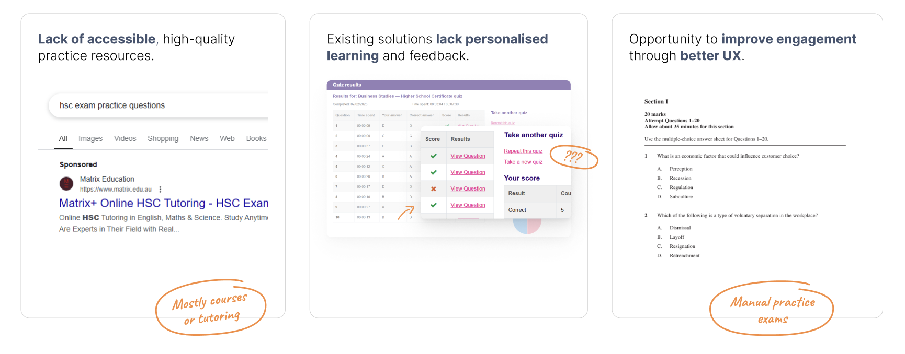
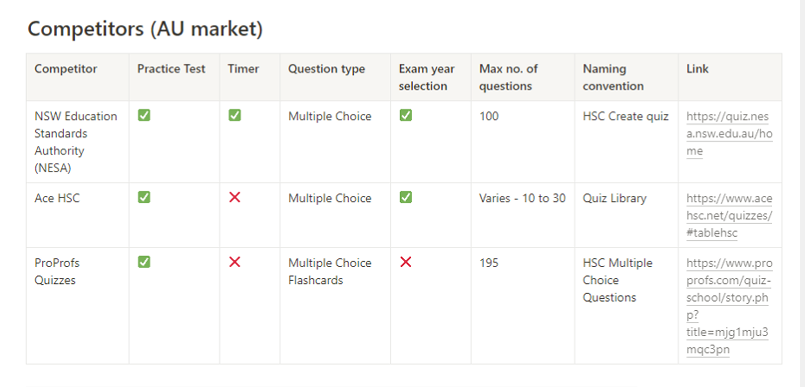
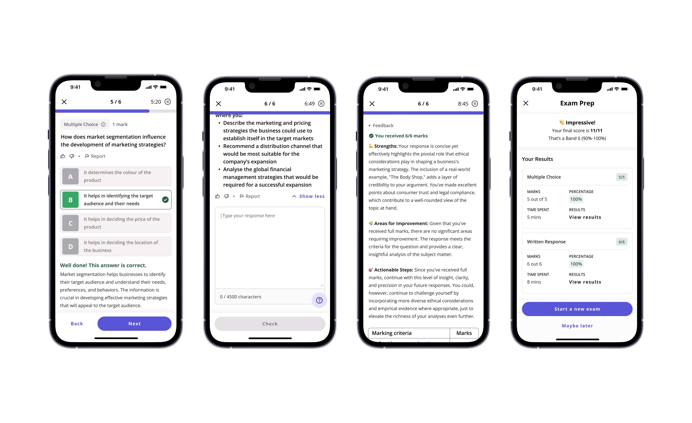
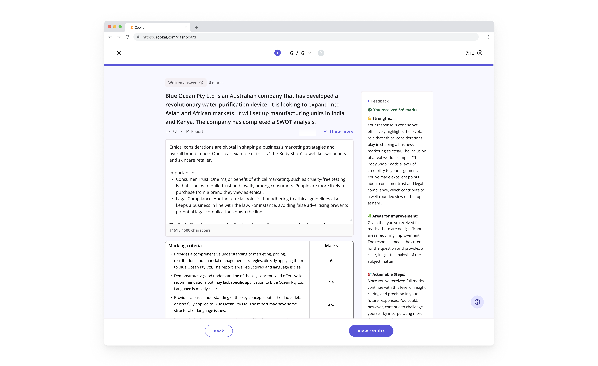
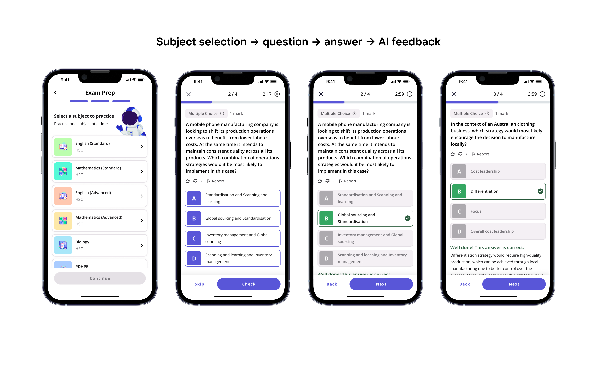
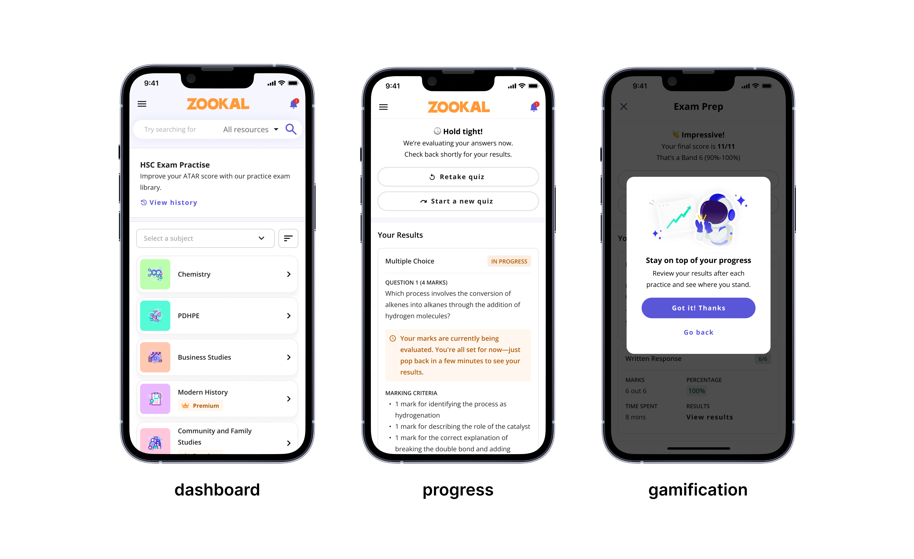
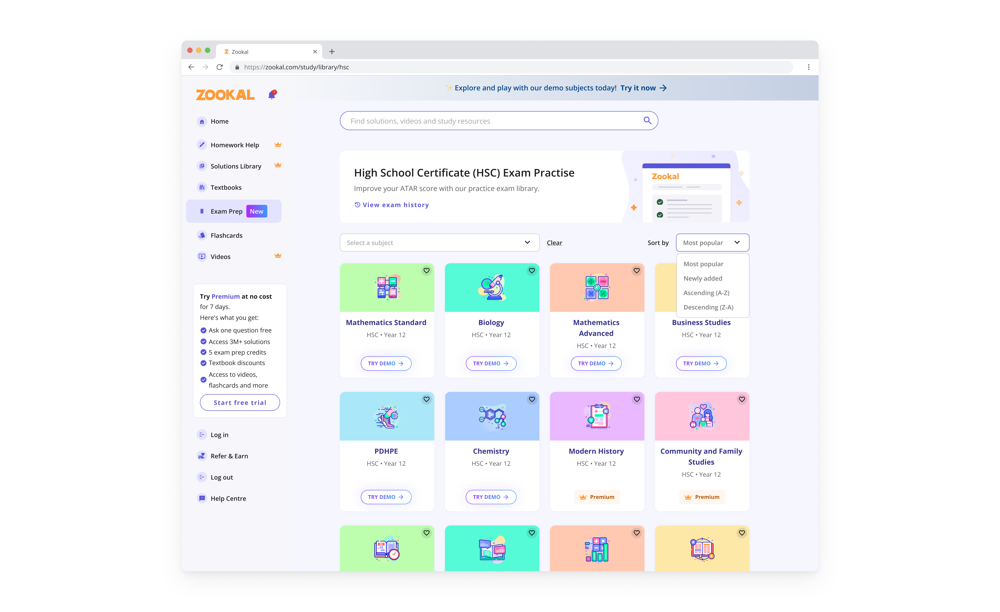

Designing an AI‑first exam prep platform for HSC and VCE students
Zookal is an ed-tech start-up based in Australia. Our mission is to empower every student with easy and affordable access to the right tools to learn faster, with confidence, wherever they are.
02 · Problem discovery
Zookal needed a product it could monetise, while students had few options between free resources and expensive tutoring.
Zookal had built its business around textbooks, but the tech downturn made raising more capital difficult. At the same time, engagement and retention were low, the platform had the foundations of a product but not enough content and the board wanted something we could monetise quickly.
On the student side, previous research and competitor analysis pointed to a more specific problem. HSC and VCE students could find practice resources online but question banks were limited, subject coverage was inconsistent and most offered little meaningful feedback.

One of those resources was NESA, the organisation responsible for the HSC in NSW. It provides official practice exams for students, so I went through the experience myself to understand what was already available.


Even with an official resource, the experience was fairly basic. I couldn’t save my progress, and there was little support beyond answering a question and seeing the result.
There were also signs that students needed a better option. Around 125,000 students sit the HSC and VCE each year, while private tutoring in Sydney can cost $60 to $100+ an hour. We saw an opportunity to offer more useful exam preparation at a much lower cost than one-on-one tutoring.

The need was there. What we should build around it was less obvious.
We still had some fundamental questions to answer: how much the product should do, how we should position it and what we could realistically build in the time we had.
With our Head of Product on leave, I worked directly with the CEO, product scientists and engineering to define the direction, shape the value proposition and narrow the scope.
Now we had something we could build.

03 · The hypothesis
The bet was as much about access and pricing as the product itself.
Our hypothesis was simple: if we could offer AI-powered exam practice with instant feedback for $20 a month, we could give HSC and VCE students a more affordable way to practise outside the classroom, without relying on private tutoring at $60+ an hour. For Zookal, it also gave existing subscribers another reason to upgrade.

This helped narrow the scope. We didn’t need to recreate everything a tutor could do. We needed enough questions, useful feedback and a simple way for students to practise consistently.
It also gave us a way to make trade-offs. Instead of asking what would make the product feel complete, we focused on what students needed for it to be genuinely useful.
06 · Designing the experience
Making exam practice easy to start and worth returning to
Start with something students already knew
We kept the question formats close to what students were already used to, from multiple choice to short and long answers. The idea was simple: the product should feel familiar from the first question.

Make the feedback useful, not just instant
For multiple choice, feedback was straightforward. Short and long answers were harder because there wasn't always one correct response.

We worked with teachers to give the AI the same HSC and VCE criteria students would be assessed against, alongside teacher feedback and example responses. My focus was on making that feedback useful to students: showing what they did well, where they could improve and what to work on next.
Students could practise written responses in a familiar exam format and get meaningful feedback straight away, without waiting for a teacher or tutor to review their work.
Make it easy to practise anywhere
On mobile, I designed the practice flow around shorter sessions, with as little friction as possible between opening the product and answering a question.
I kept the core loop simple: choose a subject, pick a practice mode, answer a question, get immediate feedback and move onto the next one. Everything else stayed secondary so students could focus on practising.

Give students a reason to come back
Getting someone through one practice session wasn't enough. We also needed to make their effort feel like it was building towards something.
I made progress visible throughout the experience so students could see what they had completed and how far they'd come. The idea was to make each session feel connected to something bigger, rather than like another standalone set of questions.

I also introduced Zookie to make exam practice feel a little less serious and repetitive. Inspired by how Duolingo uses its character throughout the learning experience, I brought Zookie into progress, feedback and achievement moments to add personality without getting in the way of practice.

Show the value before asking students to pay
The free tier also had to work as part of the experience, not just the pricing model.
Rather than locking the core experience behind a paywall, I designed the free tier so students could answer questions and see the feedback for themselves before reaching a limit. Upgrade moments only appeared once they'd had a chance to understand what the product could do.

That gave us a way to balance two competing needs: keeping the product accessible enough to be useful for students who couldn't afford tutoring, while still giving people a reason to upgrade.